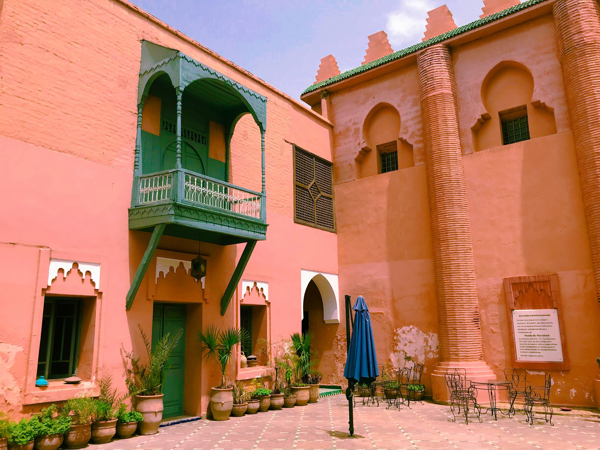

-
Colourful Morocco
Last summer vacation I went to Morocco with my lovely sister, and now I’d like to share with you my experience in this country.
When to go
The best time is from mid-March to May and followed by between September and November
Languages
The official languages are Modern Standard Arabic (MSA) and French. English for most tourists’ places is also ok.
Currency
Moroccan dirham (MAD) is the official currency. E.g. 100Dh
-

Colourful cities
Red city – Marrakech
Marrakesh is the first city we went to. After arriving at the hotel, we all felt tried because of the hot climate. We just stayed in the hotel and swam in the pool. And when it was cooler in the evening, we went to the Djemaa el-Fna, which is a really messy square I cannot imagine!
Too many people and so crowded, the only thing I remembered is the extreme juggling. And my favourite interest is Jardin Majorelle. This is a garden bought by Yves Saint Laurent, who is a famous man who deeply fell love with this blue garden just as me. If you want to take a lot of photos, don’t miss it and just spend time here as much as you can.
-
Blue city – Chefchaouen
This is an extraordinary and romantic city. Without any routes or interests, you just hang around and feel the atmosphere of it. The lazy cats, giant plants, authentic gourmets and even excellent artists will make you obsess on this city.
The most unforgotten gourmet is snail soup with lotus, my sister was so afraid of these strange ingredients that she didn’t taste it, but I was different and drank it down in a minute, actually, it is very delicious!
-
Yellow city – Fez
When I walked in the old town of Fez, I seem to have crossed into another time and space. The buildings and trails here are like a maze. However, be careful with someone who points you the way since there are too many loafers who just want to make fun of you.
And I really want to share you with a restaurant called Café Clock. This café has three layers. We had our dinner including chicken and beef tajine and two cups of mango lassi in the open-air/top one. There are also several lovely cats always jumping from a table to another one. I thought Morocco is really growing on me when I saw them.
-
White city – Casablanca
The last place is Casablanca, the capital of Morocco. Hassan II Mosque is an interest you mustn’t miss. Also, this city is famous as a film
, so we decided to visit Rick’s Café. Before you go this café, don’t forget to check the time of opening time (we have suffered a loss on this). For the experience in this café, truly valuable, I seem to walk into a movie. Definity recommend it!
-

TIPs
There are a lot of frauds you must be careful with them in Morocco, even your divers or some lovely children.
Before buying any product, the cutting price is a necessary process, please don’t be shy and try your best to bargain since most sellers are very crafty.
If you are a female, don’t be afraid of gazing from the local man since the term of religious reasons, most local women-only expose their eyes when they walk on the street. (but you also cannot dress outrageously)
Please take the responsibility of travelling, as much as possible to protect the environment or local culture and historical remains.